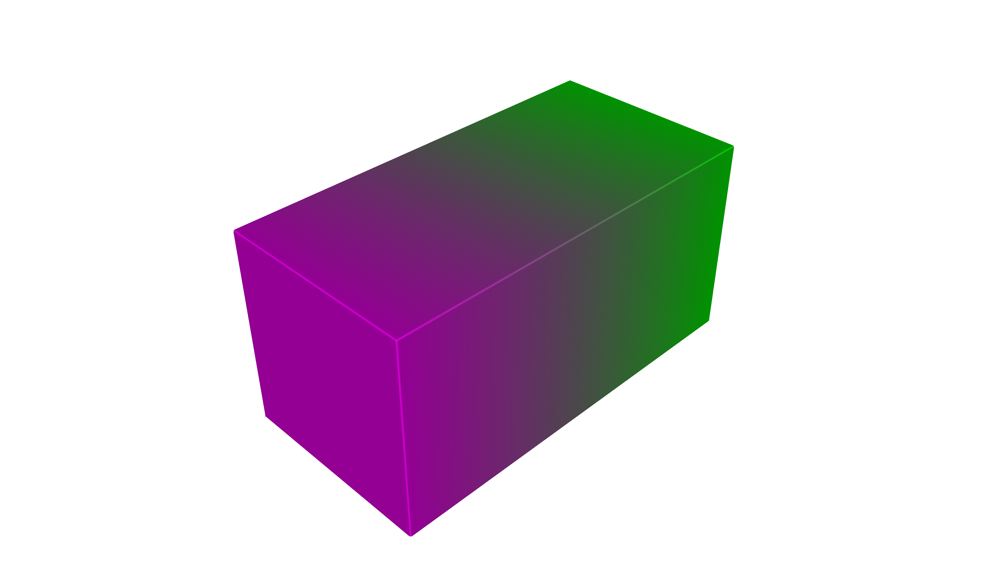
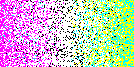
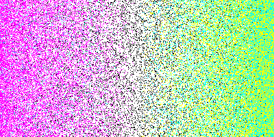

Color Inkjet Compiler#
The ColorInkjetCompiler turns OpenVCAD designs with COLOR_RGBA into a stack of RGBA PNG images—one image per build layer. Unlike a screen or paper preview, each pixel in the stack represents a single deposited ink at that voxel after a color pipeline maps your continuous sRGBA design colors into discrete choices among the printer’s base materials.
This page is both a tutorial (from a compatible design to PNG slices) and a reference for compiler behavior and Python API.
Printer model: Required Inks on a PolyJet Printer#
The color inkjet path is built around a fixed palette of six base “inks” that match how many multi-material color jetting systems are loaded in practice:
Cyan
Magenta
Yellow
Black
White
Clear (for transparency)
This is conceptually similar to office or photo inkjet printing, where you combine CMYK process inks. 3D color jetting differs in two important ways:
White is required so you can print opaque color on or inside a build—not only on white “paper.”
Clear is required so you can represent transparency.
Note
The default ICC profile bundled with pyvcad_compilers is set up for Stratasys J-series PolyJet-style printing using Vero-family process inks. If you use a different printer or resin set, pass a different profile name to the compiler (see icc_profile in the tutorial).
Prerequisites#
OpenVCAD installed with
pyvcadandpyvcad_compilers(see the installation guide and repositoryexamples/project_example).Familiarity with
COLOR_RGBAon geometry (see Getting Started with OpenVCAD, especially Lesson 5: Colors, and the Functional Grading Guide).
What this compiler is for#
Use Color Inkjet when your COLOR_RGBA design is in sRGBA and you want slice PNGs that assign one of the six base inks per inside voxel. The compiler maps continuous color through gamma, an ICC RGB → CMYK transform, CMYK + white mixing, and stochastic selection to produce discrete ink choices.
If you are driving the printer from material IDs and volume fractions instead of per-voxel RGBA, use the Material Inkjet compiler (VOLUME_FRACTIONS) instead.
What “PNG stacks” means here#
After compilation you get one PNG file per Z layer covering the scene’s bounding box:
Width × height of each PNG is the X × Y voxel resolution for that job.
RGBA stores the palette color associated with the selected ink at that voxel—not a full continuous gradient in the file (see From sRGBA to discrete inks below).
File naming: each slice uses your
file_prefixplus the layer index plus.png. Empty layers are removed after the run.Coordinate note: slice images may use an X-axis flip relative to world axes; downstream tools should match their expected image handedness.
Importing pyvcad_compilers configures the ICC profile search path to the icc_profiles directory shipped beside the module (see ColorPipeline.set_icc_resource_path in the Python API if you need a custom location).
Pipeline overview#
The compiler voxelizes the bounding box and walks Z layers. For each inside voxel it reads COLOR_RGBA, runs the color pipeline to obtain a discrete ink choice and its RGBA in the output image, writes one PNG per layer, then trims empty slices.
From sRGBA to discrete inks#
At each inside voxel the compiler evaluates your COLOR_RGBA field (components in [0, 1]). That value passes through a color pipeline that:
Applies gamma and an ICC profile transform suited to the bundled default PolyJet / Vero workflow.
Derives CMYK-style process amounts plus a white channel for CMYKW mixing.
Performs a weighted stochastic selection among the cyan / magenta / yellow / black / white components, then applies alpha so partially transparent voxels can map to clear stochastically.
So the PNG stack encodes “which base ink + how it looks in RGBA in the file,” not arbitrary 32-bit floats per channel. Fine voxels can still look grainy where many inks compete—this is expected when continuous color is turned into one material per voxel.
Missing COLOR_RGBA inside the solid#
This is separate from the root check that COLOR_RGBA appears on the tree (see Lesson 5: Colors and Lesson 7: The Node Hierarchy and Attribute Priority for how unions and overrides can leave regions without a color):
Default: undefined inside voxels use
set_fallback_color(default fully transparent sRGBA(0, 0, 0, 0)), then pass through the same pipeline.set_strict_mode(True): raisesRuntimeErroron the first inside voxel missingCOLOR_RGBA, with world-space coordinates in the message.
See examples/attributes_by_type/undefined/color_inkjet_example.py for default, custom fallback, and strict behavior on a union where only one child carries COLOR_RGBA.
Tutorial: design to PNG slices#
Scripts for this walkthrough live under examples/compilers/color_inkjet/.
1. Build geometry with COLOR_RGBA#
Use pv.Vec4Attribute (or compatible color attributes) with pv.DefaultAttributes.COLOR_RGBA. Keep components in [0, 1] (see Lesson 5: Colors).
2. Choose voxel_size#
voxel_size is a Vec3 of voxel edge lengths in millimeters. Finer voxels increase resolution and cost.
For inkjet workflows, voxel_size is often chosen to match your printer’s voxel or slice pitch.
3. icc_profile#
The constructor’s last argument selects which .icc file to load from the icc_profiles directory (without extension). The default "default" matches the Stratasys J-series / Vero assumption above. ColorPipeline.get_icc_profiles() lists available names after import pyvcad_compilers (the package sets the resource path on import).
4. Run the compiler#
import os
import shutil
import pyvcad as pv
import pyvcad_compilers as pvc
import pyvcad_rendering as viz
materials = pv.default_materials
cube = pv.RectPrism(pv.Vec3(0, 0, 0), pv.Vec3(20, 10, 10))
r_expr = "x/20 + 0.5"
g_expr = "-x/20 + 0.5"
b_expr = "x/20 + 0.5"
a_expr = "1.0"
color_gradient = pv.Vec4Attribute(r_expr, g_expr, b_expr, a_expr)
cube.set_attribute(pv.DefaultAttributes.COLOR_RGBA, color_gradient)
root = cube
voxel_size = pv.Vec3(0.15, 0.15, 0.15)
output_dir = os.path.join(os.path.dirname(__file__), "output")
prefix = "slice_"
if os.path.isdir(output_dir):
shutil.rmtree(output_dir)
os.makedirs(output_dir, exist_ok=True)
compiler = pvc.ColorInkjetCompiler(root, voxel_size, output_dir, prefix, "default")
def on_progress(p):
print("compile progress: {:.1f}%".format(100.0 * p))
compiler.set_progress_callback(on_progress)
compiler.compile()
print("resolution (x, y, z png count):", compiler.resolution())
viz.Render(root, materials)
From the repository root, with the virtual environment activated: python examples/compilers/color_inkjet/01_basic_png_stack.py compiles then opens the interactive preview. Comment out viz.Render to run compile-only.
5. Preview in the renderer#
Use viz.Render(root, materials) and select COLOR_RGBA in the renderer to compare the continuous field with the discrete appearance in the PNG stack.
Reference: Python API#
Constructor#
ColorInkjetCompiler(root, voxel_size, output_directory, file_prefix, icc_profile="default")
Argument |
Meaning |
|---|---|
|
Root |
|
|
|
Output folder for PNGs. |
|
Prefix for slice filenames. |
|
Profile stem (e.g. |
Methods (including CompilerBase)#
Method |
Role |
|---|---|
|
Run the full pipeline. |
|
Names this compiler requires ( |
|
Request cooperative cancellation. |
|
|
|
|
|
Require |
|
sRGBA fallback [0, 1] per channel when strict mode is off. |
ColorPipeline (module-level utilities): set_icc_resource_path, get_icc_profiles.
For autodoc signatures, see pyvcad_compilers (ColorInkjetCompiler, CompilerBase, ColorPipeline).
Figures#
Design preview (continuous COLOR_RGBA in the renderer; same scene as the example):
COLOR_RGBA (preview)

Example slices after compilation (middle layer of the stack; same scene, two voxel_size settings). Finer voxels reduce stair-stepping but increase layer count and compile time:
Slice — 0.15 mm voxels

Slice — 0.05 mm voxels

Limitations#
One discrete ink per voxel in the output; continuous sRGBA is quantized through the pipeline and stochastic selection.
Ink choice is stochastic for speed and implementation reasons, and the pipeline does not apply dithering. You may see small clumps of color instead of a smooth halftone in regions where many inks would blend.
Resolution depends on
voxel_sizeand bounding box; thin color features need sufficiently small voxels.Root attribute list must include
COLOR_RGBA; missing per-voxel samples use strict / fallback, which is different from the attribute never appearing on the tree.ICC and palette assumptions (default Stratasys J-series / Vero) may not match your physical hardware without a tailored profile or calibration.
Further examples#
examples/compilers/color_inkjet/01_basic_png_stack.py— gradient compile + render (this guide).examples/attributes_by_type/undefined/color_inkjet_example.py— fallback and strict mode with partialCOLOR_RGBAon a union.